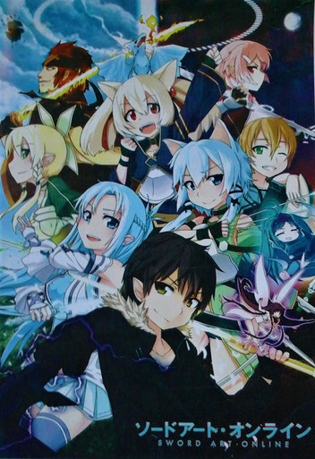
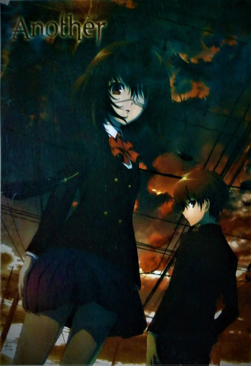
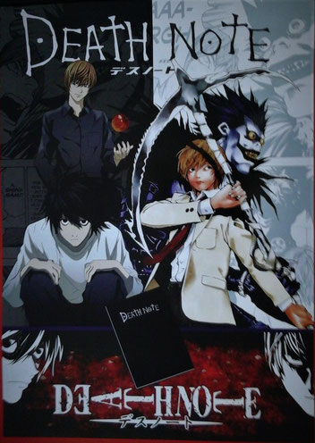
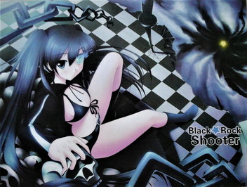
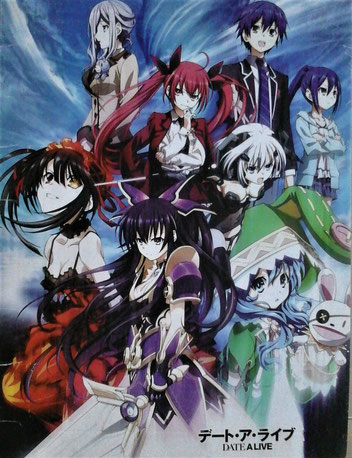
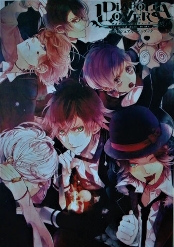
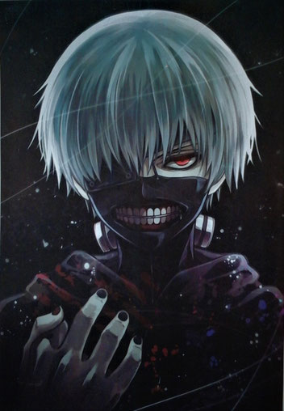

Animes de Referencia
SWORD ART ONLINE

SINOPSIS:
Escapar es imposible hasta terminar el juego; un game over significaría una verdadera “muerte”. Sin saber la “verdad” de la siguiente generación del Multijugador Masivo Online, ‘Sword Art Online (SAO)’, con 10 mil usuarios unidos juntos abriendo las cortinas para esta cruel batalla a muerte.
Participando solo en SAO, el protagonista Kirito ha aceptado inmediatamente la “verdad” de este MMO. Y, en el mundo del juego, un gigante castillo flotante llamado ‘Aincrad’, Kirito se distinguió a sí mismo como un jugador solitario. Apuntando a terminar el juego al alcanzar la planta más alta el solo continúa avanzando arriesgada mente hasta que recibe una invitación a la fuerza de una guerrera y esgrimista experta, Asuna, con la cual tendrá que hacer equipo.
ANOTHER

SINOPSIS:
La historia se centra en una clase maldita y en los hilos del destino que llevan a todos los alumnos y alumnas de la misma hasta a la muerte. Hacía 26 años iba a esa clase una chica llamada Misaki. Buena deportista, popular, caía bien a todo el mundo, las mejores notas… pero un día murió dejando un vacío enorme en sus compañeros de clases. Estos, decididos a no olvidarla, siguieron actuando como si Misaki siguiera viva hasta la graduación. Años después, en primavera de 1998, un chico llamado Koichi Sakakibara es transferido a esa clase para no tardar en darse cuenta de que hay algo raro ahí, especialmente con esa tal Misaki que siempre ve al fondo de clase dibujando sola y que lleva un parche.
GÉNEROS:
escuela, gore, horror, misterio, sobrenatural, suspenso.
DEATH NOTE

SINOPSIS:
Light Yagami es un excelente estudiante japonés que ha tenido una vida un tanto aburrida. Esto cambia radicalmente cuando encuentra tirado en el patio de la escuela un cuaderno negro conocido como Death Note (Libreta de la Muerte), perdido por un Shinigami (Dios de la muerte) llamado Ryuk. Cualquier humano cuyo nombre sea escrito en dicho cuaderno morirá; y, Light -luego de leer las instrucciones en el mismo- ha decidido utilizar este poder para crear un mundo sin criminales, “perfecto” según su visión. Cuando los criminales comienzan a morir de forma masiva y generalmente víctimas de ataque cardíaco, las autoridades envían al legendario detective L en busca del asesino. Con L pesándole los talones: ¿podrá mantener Light su propósito incluso arriesgando su vida?
GÉNEROS:
misterio, policía, psicológico, suspenso.
FAIRY TAIL
SINOPSIS:
Cuenta la historia de un joven mago llamado Natsu en la búsqueda de su maestro y padre adoptivo Igneel que resulta ser un dragón. Por ello se unió a Fairy Tail, un gremio de magos que es famoso por los destrozos y daños que provocan en diversas ciudades (lo cual no debería ser así). El mundo de Fairy Tail gira alrededor de los magos (los cuales poco tienen que ver con la idea general del mago común) que realizan encargos a cambio de dinero, similar a un caza recompensas. Natsu conoce a Lucy, una guapa muchacha cuyo sueño era ingresar a un gremio de magos, específicamente, a Fairy Tail, lo cual consigue gracias a la ayuda de Natsu. De ahí en adelante, la historia sigue los movimientos de esta pareja de magos los cuales se ven envueltos en un sin número de aventuras antes de conseguir la meta final de encontrar a Igneel.
GÉNEROS:
accion, aventura, comedia, fantasía, magia, shoune. .
NARUTO SHIPPUDEN
SINOPSIS:
La acción empieza tras los dos años y medio que el protagonista, Naruto Uzumaki, ha pasado entrenando con su maestro Jiraiya. En ella reaparecen todos los personajes de la anterior serie pero con más experiencia y fuerza. Además, la Organización Akatsuki entra definitivamente en acción, tras su breve aparición en la parte anterior, y se revelan sus objetivos. El enemigo principal de la parte anterior de Naruto, Orochimaru, ha estado mientras tanto entrenando a Sasuke Uchiha, antiguo compañero de Naruto, que abandonó voluntariamente la aldea para ganar fuerza gracias a este personaje, y así poder tomar venganza contra su hermano, Itachi Uchiha.
GÉNEROS:
artes marciales, comedia, shounen, superpoderes.
BLACK ROCK SHOOTER

SINOPSIS:
Mato Kuroi una alegre y activa chica llega a su primer día de instituto, y una joven le llama la atención, se trata de Yomi Takanashi una chica madura que va a su misma clase. Ambas entablan amistad, una amistad que se irá fortaleciendo a través del tiempo. Tras su llegada a segundo año de instituto son separadas y empiezan a distanciarse. Mientras tanto en algún lugar dos chicas se enfrentan entre ellas, una llevando una enorme arma de fuego de alto calibre (Black Rock Shooter) y la otra llevando una guadaña negra (Dead Master), ambas guardan un parecido considerable con las jóvenes Yomi y Mato.
GÉNEROS:
acción, drama, escuela, encuentros de la vida.
FREE!
SINOPSIS:
La trama se centra en Haruka Nanase, un chico al que siempre le ha gustado estar sumergido en el agua, y nadar. Antes de acabar la escuela primaria, participó en un un torneo junto con sus compañeros del club de natación (Makoto Tachibana, Nagisa Hazuki, y Rin Matsuoka); tras haber ganado el mismo, cada uno de ellos cogió un rumbo diferente. Transcurrido un tiempo, en medio de sus tranquilas vidas de instituto, aparece Rin para retar a Haruka, mostrándole su poder arrollador. Sin querer que esto acabe así, Haruka reúne de nuevo a Makoto y a Nagisa, así como a un nuevo miembro llamado Rei Ryugazaki, y forma el club de natación Iwatobi.
GÉNEROS:
comedia, deportes, escuela, recuerdos de la vidad.
DATE A LIVE

SINOPSIS:
Itsuka Shidou es un estudiante de instituto que, durante las vacaciones, vive en primera persona un suceso sin igual. Ante él aparece una chica con armadura, que destruye la ciudad que tiene delante. La chica responde ante el nombre de Tooka, y según la hermana de Shidou, es un espíritu (“seirei”) los cuales causaron un terremoto espacio-temporal 30 años atrás. La hermana de Shidou revela que su verdadera identidad es la de la líder de la organización Ratatosk y le cuenta a Shidou que la única manera que tienen de salvar el mundo es hacer que Tooka se acabe enamorando de él y tengan una cita.
GÉNEROS:
ciencia ficción, comedia, escuela, haren, mecha, romance.
DIABOLI LOVERS

SINOPSIS:
Yui Komori es una chica positiva quien nunca se ha visto envuelta en problemas viendo espíritus o teniendo experiencias paranormales. En su segundo año de instituto, es transferida a una nueva escuela. Esta es una escuela nocturna donde acuden jóvenes famosos, debido al trabajo de sus padres. Sin embargo, corre el rumor de que hay vampiros en la institución. Es aquí donde la joven Yui entrará en contacto con los 6 hermanos vampiros.
GÉNEROS:
escuela, haren, shoujo, vampiros.
HIGHSCHOOL OF THE DEAD
SINOPSIS:
El mundo entero esta siendo dominado por una enfermedad mortal, esto convierte a los humanos en zombies. En Japón, muchos estudiantes de la preparatoria Fujimi y la enfermera de la escuela, estarán juntos tratando de sobrevivir al presente Apocalipsis. La historia se centra en Takashi Komuro, uno de los estudiantes que ha sobrevivido a esta grave enfermedad.
GÉNEROS:
acción, ecchi, harem, sobrenatural.
KUROSHITSUJI: BOOK OF CIRCUS
SINOPSIS:
En una casa señorial de las afueras de Londres, en la época victoriana, el mayordomo Sebastian Michaelis sirve a Ciel Phantomhive, un niño de 12 años (13, posteriormente), quien es jefe de una familia noble y de una empresa de juguetes. Sebastián lleva a cabo cualquier tarea requerida por su amo y resuelve los problemas que asolan Inglaterra con facilidad y perfección debido a su linaje demoníaco y al contrato con Ciel Phantomhive, el cual consiste en encontrar a los culpables de la muerte sus padres y tomar venganza, una vez concretado esto, Sebastián tomará posesión del alma de Ciel.
GÉNEROS:
comedia, demonios, fantasía, histórico, shounen, sobrenatural.
HIGH SCHOOL DXD
SINOPSIS:
La historia está protagonizada por Issei Hyoudou, un muchacho de segundo año de instituto bastante salido al que una chica asesina en la primera cita de su vida. Issei se reencarna como demonio, y desde ese mismo día trabaja como sirviente de Riasu, una chica demonio de altísimo nivel que resulta ser la más guapa y popular de todo el instituto.
GÉNEROS:
comedia, demonios, ecchi, escuela, haren, romance.
TOKYO GHOUL

SINOPSIS:
La ciudad de Tokyo vive atemorizada por los atroces de crímenes cometidos por los Ghouls, unas misteriosas criaturas que se ocultan entre sus habitantes y se alimentan de carne humana. Kaneki Ken, un joven y tímido universitario sobrevive a una operación de trasplante de órganos tras ser atacado y casi devorado por uno de ellos; tras abandonar el hospital Kaneki sufre un extraño proceso de metamorfosis que provocará un inesperado giro en su vida, los órganos trasplantados pertenecían al Ghoul muerto durante el ataque… ahora, mitad humano y mitad Ghoul tendrá que aprender a vivir de nuevo.
GÉNEROS:
acción, drama, sobrenatural, gore, horror, misterio, psicológico, seinin.